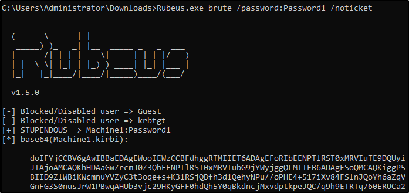

Harvesting & Brute-Forcing Tickets w/ Rubeus
To start this task you will need to RDP or SSH into the machine your credentials are -
Rubeus is a powerful tool for attacking Kerberos. Rubeus is an adaptation of the kekeo tool and developed by HarmJ0y the very well known active directory guru.
Rubeus has a wide variety of attacks and features that allow it to be a very versatile tool for attacking Kerberos. Just some of the many tools and attacks include overpass the hash, ticket requests and renewals, ticket management, ticket extraction, harvesting, pass the ticket, AS-REP Roasting, and Kerberoasting.
The tool has way too many attacks and features for me to cover all of them so I'll be covering only the ones I think are most crucial to understand how to attack Kerberos however I encourage you to research and learn more about Rubeus and its whole host of attacks and features here -
https://github.com/GhostPack/RubeusRubeus is already compiled and on the target machine.Harvesting Tickets w/ Rubeus -
Harvesting gathers tickets that are being transferred to the KDC and saves them for use in other attacks such as the pass the ticket attack.
1.)
cd Downloads - navigate to the directory Rubeus is in
2.)
Rubeus.exe harvest /interval:30 - This command tells Rubeus to harvest for TGTs every 30 seconds
Brute-Forcing / Password-Spraying w/ Rubeus -
Rubeus can both brute force passwords as well as password spray user accounts. When brute-forcing passwords you use a single user account and a wordlist of passwords to see which password works for that given user account. In password spraying, you give a single password such as Password1 and "spray" against all found user accounts in the domain to find which one may have that password.
This attack will take a given Kerberos-based password and spray it against all found users and give a .kirbi ticket. This ticket is a TGT that can be used in order to get service tickets from the KDC as well as to be used in attacks like the pass the ticket attack.Before password spraying with Rubeus, you need to add the domain controller domain name to the windows host file. You can add the IP and domain name to the hosts file from the machine by using the echo command:
echo 10.10.215.150 CONTROLLER.local >> C:\Windows\System32\drivers\etc\hosts1.) cd Downloads - navigate to the directory Rubeus is in
2.) Rubeus.exe brute /password:Password1 /noticket - This will take a given password and "spray" it against all found users then give the .kirbi TGT for that user
Be mindful of how you use this attack as it may lock you out of the network depending on the account lockout policies.
{kind=link}
{kind=link}
{kind=link}